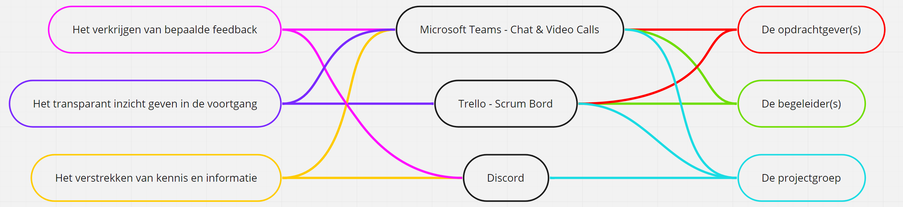
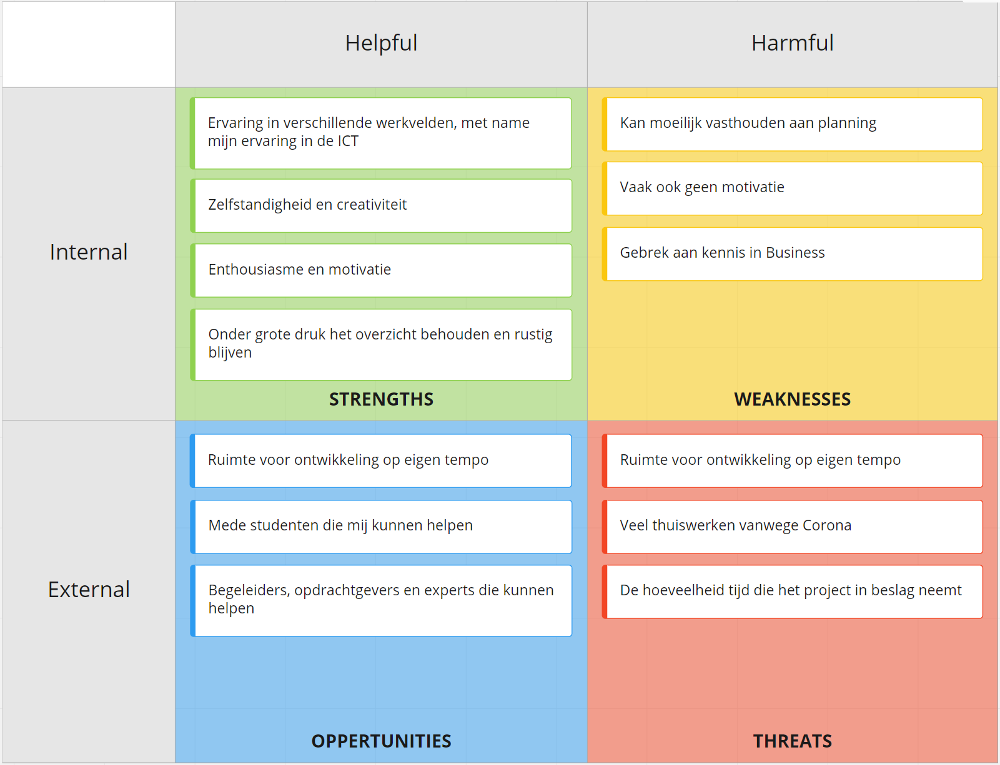

Op deze pagina zal ik alle competenties van de Minor Smart Industry aantonen.
Ontdek meer
Voor deze competentie beschrijf ik de mate van volwassenheid van een organisatie m.b.t. Smart Industry in een business case.
Deze competentie wordt ook aangetoond via alle activiteiten en informatie die op mijn portfolio te vinden zijn.
Hieronder volgt de uitwerking:
Voor deze competentie wil ik u graag doorverwijzen naar de volgende pagina's:
Hierbij wil ik u verzoeken om op de pagina "Smart Project" specifiek te kijken naar mijn hoofdstuk De impact en analyse, naar mijn reflecite en naar de hoofdstukken Conclusie en Aanbevelingen.
Op de pagina "Smart Start" verzoek ik u om te kijken naar Week 1, Week 2, Week 4 & Week 5.
De overige informatie die op deze pagina's te vinden is, is in zekere mate ook relevant voor deze competentie.
Voor deze competentie toon ik aan hoe ik op effectieve wijze mijn bevindingen naar verschillende doelgroepen communiceer.
Deze competentie wordt ook aangetoond via alle activiteiten en informatie die op mijn portfolio te vinden zijn.
Hieronder volgt een specifieke uitwerking:
Aan het begin van het Smart Project het ik mij gericht op het opzetten van effectievie communicatiekanalen.
Hiervoor heb ik samen met de projectgroep eerst de verschillende communicatiedoelen en communicatie doelgroepen gedefinieerd.
Dit zijn:
Communicatiedoelen:
Communicatie doelgroepen:
Na het definieren van de communicatiedoelen en communicatie doelgroepen, hebben we 4 verschillende communicatiekanalen gedefinieerd.
Deze communicatiekanalen zijn geselecteerd op basis van ervaring, effectiviteit en de intergratie met de projectmethode (SCRUM).
De volgende communicatiekanalen zijn gedefinieerd:
Om de verbinding tussen de communicatiedoelen, communicatie doelgroepen en de communicatiekanalen te visualiseren heb ik de volgende illustratie gemaakt.
Ik zal nu per communicatiekanaal uitleggen hoe deze heeft gefungeert tijdens het project.
Microsoft Teams:
De communicatiedoelgroepen van Microsoft Teams zijn de opdrachtgever(s), de begeleider(s) en de projectgroep.
Voor het verkrijgen van bepaalde feedback upload de projectgroep de laatste versie van een bestand naar het Teams kanaal.
Vervolgens plaatst de projectgroep een bericht in het Teams kanaal met een link naar het bestand en met de vraag of de opdrachtgever(s) en/of begeleider(s) feedback willen geven (over het geheel of over bepaalde stukken).
Voor het Transparant inzicht geven in de voortgang plant de projectgroep iedere week afzonderlijk een vergadering in met de opdrachtgever(s) en met de begeleider(s).
Tijdens deze vergadering: geeft de projectgroep inzicht in de voortgang; is er ruimte voor vragen van zowel de projectgroep, als de andere partij; en wordt gereflecteerd op de communicatie.
Voor het verstrekken van kennis en informatie plaatst de projectgroep de laatste versies van de bestanden in het Teams Kanaal zodat deze voor iedere communicatie doelgroep inzichtelijk zijn.
Hiernaast worden belangrijke bevindingen en vragen ook gedeeld via de Teams Chat. Hierdoor kunnen de communicatie doelgroepen snel op de hoogte zijn van ontwikkelingen en vragen.
Trello:
De communicatiedoelgroepen van Trello zijn de opdrachtgever(s), de begeleider(s) en de projectgroep.
Trello fungeert als Scrumbord. Het Scrumbord heeft voor dit project de volgende doelen:
Het Scrumbord maakt het project inzichtelijk voor de opdrachtgever(s) en begeleider(s).
Discord:
De communicatiedoelgroepen van Discord is de projectgroep.
Iedere dag houdt de projectgroep een daily stand-up waarin de voortgang, knelpunten en planning wordt besproken.
Iedere dag na de lunch komt de projectgroep bij elkaar op Discord om kennis en informatie van die dag met elkaar te delen.
Tot slot wordt wekelijks via Discord besproken hoe de communicatie verloopt en of er ruimte is voor verbetering.
Op deze manier blijft de onderlingen communicatie hoog en wordt miscommunicatie beperkt.
Hieronder volgt een presentatie van de projectgroep aan de klas en begeleiders, waarin deze competentie nogmaals wordt aangetoont.
De voorafgaande opzet van de communicatie heeft ervoor gezorgd dat de communicatiekanalen zo effectief mogelijk zijn ingezet en gebruikt. De PDCA-cyclus heeft ervoor gezord dat de kwaliteit van communicatie gedurende het gehele project hoog is geweest. Ondanks de thuiswerk situatie heeft de projectgroep onderling altijd veel gecommuniceerd. Deze communicatie is mede de rede van het mooie eindresultaat van het project.
Voor deze competentie toon ik aan hoe ik actief aan mijn professionele ontwikkeling heb gewerkt.
Deze competentie wordt ook aangetoond via alle activiteiten en informatie die op mijn portfolio te vinden zijn.
Hieronder volgt een specifieke uitwerking:
Voor mijn professionele ontwikkeling tijdens deze minor heb ik drie belangrijke doelen voor mijzelf opgesteld met daarbij en specificerende uitleg. Dit zijn:
Netwerken:
Ik hecht veel waarde aan een breed professioneel netwerk en ik wil gedurende deze minor mijn professionele netwerk ook uitbreiden. Dit kan bijvoorbeeld door omgang met klasgenoten en begeleiders.
Tools en ervaringen:
Door deel te nemen aan deze minor wil ik tools ontdeken die ik in mijn carrière kan inzetten om mij te helpen. Hiernaast wil ik ervaringen opdoen die mijn professionaliteit naar een hoger niveau tillen.
Kennis:
Ik probeer op professioneel gebied zo veel mogelijk te ontwikkelen en ik wil meer dan de helft van de opgedane kennis mee uit deze minor nemen in mijn toekomst als professional.
Ieder van deze doelen heb ik aan acties gekoppeld om zo de doelen te bereiken. Dit zijn:
Netwerken:
Ik wil mijn professionele netwerk vooral uitbreiden met personen die mijn interesses delen.
Om te beginnen wil buiten het klaslokaal om een connectie maken met klasgenoten of begeleiders die mijn interesses delen en mij eventueel verder kunnen helpen wanneer ik op zoek ben naar een werkgelegenheid.
Dit kan door een connectie te maken op een platform zoals LinkedIn.
Tot slot probeer ik een goede en blijvende indruk op deze personen achter te laten door tijdens deze minor veel inzet te tonen en producten van hoge kwaliteit op te leveren.
Tools en ervaringen:
Voor ieder vak heb ik bepaalde doelen met betrekking tot tools en ervaringen, deze zijn hieronder per vak beschreven:
Kennis:
Door actief mee te doen in de lessen probeer ik zo veel mogelijk kennis tot mij te nemen. Naast het actief mee doen documenteer ik ook interessante onderdelen van de les.
Naast deze documentatie bewaar en documenteer ik ook veel van mijn activiteiten en projecten met betrekking tot nieuwe informatie. Grote delen van deze documentatie komen terug in het portfolio.
Naast mijn doelen heb ik ook een SWOT-analyse van mijzelf gedaan om te ontdekken waar mijn struikelblokken en kansen liggen voor deze minor. De SWOT-analyse is hieronder te zien:

Ik zal per doel reflecteren op de resultaten.
Netwerken:
Ik hecht veel waarde aan een breed professioneel netwerk en ik wil gedurende deze minor mijn professionele netwerk ook uitbreiden. Dit kan bijvoorbeeld door omgang met klasgenoten en begeleiders.
Tools en ervaringen:
Door deel te nemen aan deze minor wil ik tools ontdeken die ik in mijn carrière kan inzetten om mij te helpen. Hiernaast wil ik ervaringen opdoen die mijn professionaliteit naar een hoger niveau tillen.
Kennis:
Ik probeer op professioneel gebied zo veel mogelijk te ontwikkelen en ik wil meer dan de helft van de opgedane kennis mee uit deze minor nemen in mijn toekomst als professional.
"Past nieuwe technologieën op het gebied van van IoT, Robotica en 3D-printen toe op een praktijkcasus"
Deze competentie wordt ook aangetoond via alle activiteiten en informatie die op mijn portfolio te vinden zijn.
Hieronder volgt de uitwerking:
Voor deze competentie wil ik u graag doorverwijzen naar de volgende pagina's:
Hierbij wil ik u verzoeken om op de pagina "Smart Project" specifiek te kijken naar mijn reflecite en naar de hoofdstukken Programma van Eisen, 3D-Print technieken en Conclusie.
Op de pagina "Smart Technlogy" verzoek ik u om te kijken naar de gehele inhoud.
De overige informatie die op deze pagina's te vinden is, is in zekere mate ook relevant voor deze competentie.
"Plaatst de casus in een business context"
Deze competentie wordt ook aangetoond via alle activiteiten en informatie die op mijn portfolio te vinden zijn.
Hieronder volgt de uitwerking:
Voor deze competentie wil ik u graag doorverwijzen naar de volgende pagina's:
Hierbij wil ik u verzoeken om op beide pagina's de gehele inhoud te bekijken.
"Past nieuwe technologieën op het gebied van web, data, cloud en AI toe op een praktijkcasus"
Deze competentie wordt ook aangetoond via alle activiteiten en informatie die op mijn portfolio te vinden zijn.
Hieronder volgt de uitwerking:
Voor deze competentie wil ik u graag doorverwijzen naar de volgende pagina's:
Hierbij wil ik u verzoeken om op beide pagina's de gehele inhoud te bekijken.
Vóór deze minor heb ik tijdens een school project, met een projectgroep, een cloudomgeving opgezet. Het eindresultaat was een werkende Cloud omgeving.
De documentatie, waaronder de Business Case van dit project, kan via de volgende verwijzingen worden bekeken:
"Plaatst de casus in een business context"
Deze competentie wordt ook aangetoond via alle activiteiten en informatie die op mijn portfolio te vinden zijn.
Hieronder volgt de uitwerking:
Voor deze competentie wil ik u graag doorverwijzen naar de volgende pagina's:
Hierbij wil ik u verzoeken om op beide pagina's de gehele inhoud te bekijken.
Vóór deze minor heb ik tijdens een school project, met een projectgroep, een cloudomgeving opgezet. Het eindresultaat was een werkende Cloud omgeving.
De documentatie, waaronder de Business Case van dit project, kan via de volgende verwijzingen worden bekeken:
"Ontwerpt bedrijfsprocessen volgens Smart Industry criteria"
Deze competentie wordt ook aangetoond via alle activiteiten en informatie die op mijn portfolio te vinden zijn.
Hieronder volgt de uitwerking:
Voor deze competentie wil ik u graag doorverwijzen naar de volgende pagina's:
Hierbij wil ik u verzoeken om op de pagina "Smart Project" specifiek te kijken naar de hoofdstukken De impact en analyse en eventueel naar de Conclusie en Aanbevelingen.
Op de pagina "Smart Business" verzoek ik u om te kijken naar de gehele inhoud.
De overige informatie die op deze pagina's te vinden is, is in zekere mate ook relevant voor deze competentie.
"Beschrijft de implicaties voor het gehele business model en voor de positie van de organisatie in de keten"
Deze competentie wordt ook aangetoond via alle activiteiten en informatie die op mijn portfolio te vinden zijn.
Hieronder volgt de uitwerking:
Voor deze competentie wil ik u graag doorverwijzen naar de volgende pagina's:
Hierbij wil ik u verzoeken om op de pagina "Smart Project" specifiek te kijken naar de hoofdstukken De impact en analyse en eventueel naar de Conclusie en Aanbevelingen.
Op de pagina "Smart Business" verzoek ik u om te kijken naar de gehele inhoud.
De overige informatie die op deze pagina's te vinden is, is in zekere mate ook relevant voor deze competentie.
"Ontwikkelt een prototype van de oplossing(srichting)"
Voor deze competentie wil ik u graag doorverwijzen naar de volgende pagina:
"Draagt vanuit verschillende rollen bij aan het succes van een projectteam"
Voor deze competentie wil ik u graag doorverwijzen naar de volgende pagina:
Hierbij wil ik u verzoeken om op de pagina "Smart Project" specifiek te kijken naar het hoofdstuk Reflectie.
De overige informatie die op deze pagina te vinden is, is in zekere mate ook relevant voor deze competentie.
"Vertaalt een praktijkcasus naar een onderzoeksplan, voert deze uit en evalueert de kwaliteit van uitvoering"
Voor deze competentie wil ik u graag doorverwijzen naar de volgende pagina:
Hierbij wil ik u verzoeken om op de pagina "Smart Project" specifiek te kijken naar de hoofdstukken Reflectie en Plan van Aanpak.
De overige informatie die op deze pagina te vinden is, is in zekere mate ook relevant voor deze competentie.
"Draagt actief bij aan een optimale werksfeer sfeer binnen en buiten zijn team"
Voor deze competentie wil ik u graag doorverwijzen naar de volgende pagina:
Hierbij wil ik u verzoeken om op de pagina "Smart Project" specifiek te kijken naar het hoofdstuk Reflectie.
De overige informatie die op deze pagina te vinden is, is in zekere mate ook relevant voor deze competentie.
"Ontwikkelt een professioneel netwerk"
Voor deze competentie wil ik u graag doorverwijzen naar de volgende pagina's:
Hierbij wil ik u verzoeken om op de pagina "Smart Project" specifiek te kijken naar het hoofdstuk Reflectie.
Op de pagina "Competenties" verzoek ik u om te kijken naar Competentie SS71.
De overige informatie die op deze pagina's te vinden is, is in zekere mate ook relevant voor deze competentie.